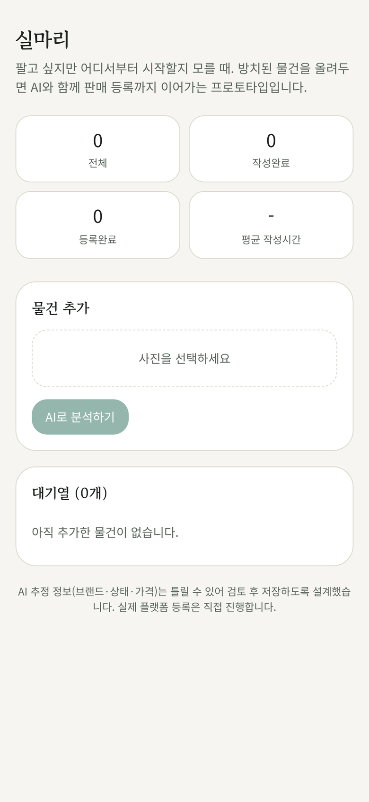
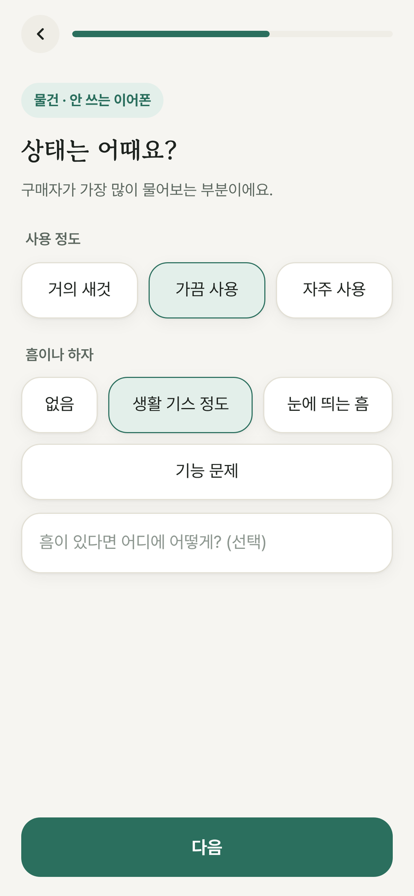

만든 과정 — 만들기 전에 먼저 확인했어요
- 1문제 발견
당근에는 이미 AI 판매글이 있었어요. 그런데 왜 물건은 아직 집에 있을까? 설문 25명 중 18명에게 팔려다 못 판 물건이 있었고, AI 판매글을 써 본 12명 중 6명은 가격 정하기가 여전히 어려웠어요.
- 2확인용 화면 만들기
사진을 보고 글을 써 주는 v1에 이어, 질문으로 안내하는 v2 실험 화면을 만들었어요. 둘 다 서비스가 아니라 가설을 확인하려고 만든 도구예요.
- 3실행해서 확인
10명이 집에 있는 실제 물건 2개로 평소 방식과 비교했어요. 판단 기준은 실험 전에 정했어요. 가격 자신감이 평균 2.3점에서 4.7점으로 올랐고, 10명 모두 질문에 답하는 방식이 더 편하다고 했어요.
- 4피드백 받고 다시
3명이 추천보다 높게 정한 것을 보고 '왜 그 가격인가'를 보여 주기로 했고, 조사로 문제를 다시 정의해 정리 마감에 맞춘 첫 버전을 만들었어요.


설문과 실험은 지인 중심이라 경향으로 봐요. 실험 버전에는 AI가 없었고, 이 서비스는 아직 시험하지 않았어요. 첫 사용은 만든 사람의 12월 3일 이사예요.